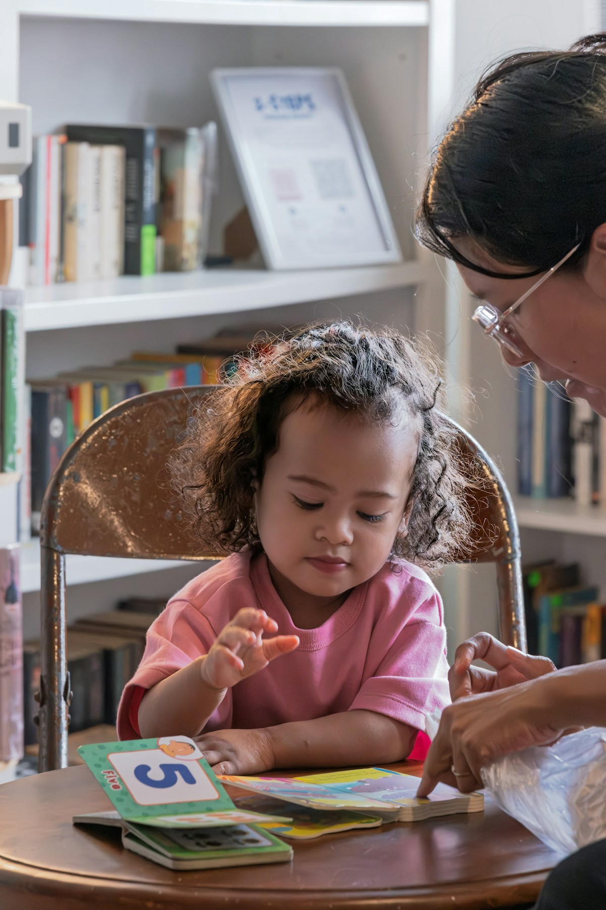
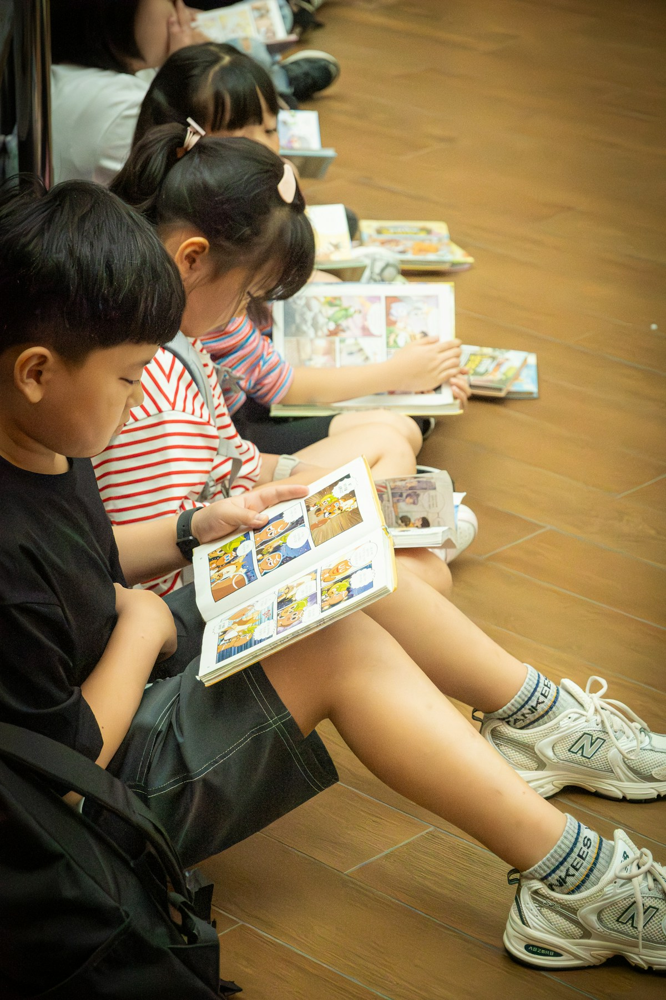
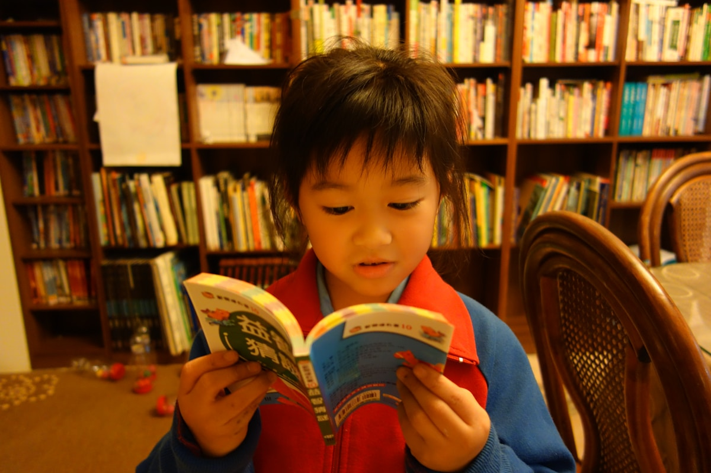

阅读启蒙
适合3-6岁，使用绘本共读、故事复述和游戏化提问，建立阅读兴趣与专注力。
- 绘本理解
- 词汇积累
- 亲子共读
3-14岁儿童阅读成长中心
以“引导、陪伴、分享”为核心，把阅读课、表达训练、阅读记录和家庭共读连接起来，帮助孩子建立稳定的阅读习惯。
Courses
围绕兴趣启蒙、精读理解、表达输出和自主阅读四个阶段，给孩子一条清晰的阅读成长路径。
适合3-6岁，使用绘本共读、故事复述和游戏化提问，建立阅读兴趣与专注力。
适合6-10岁，通过老师领读、小组讨论和阅读任务单，提升理解、概括与表达。
适合9-12岁，围绕人物、情节、观点和写作结构，让孩子从读懂走向说清楚。
适合10-14岁，把整本书阅读与写作训练结合，形成素材、结构和语言表达能力。
Method
课程以领读老师为核心，把课前兴趣激发、课中问题引导、课后表达输出串联起来。孩子每次阅读都有目标、有反馈、有可见成长。
了解孩子兴趣、识字量、理解力和表达状态。
匹配年龄、能力和主题兴趣，避免过难或过浅。
老师引导阅读，小组互动讨论，沉淀阅读任务。
定期输出阅读报告，给家长可执行的陪伴建议。
Space & Activities

开放书架、分龄书单和小组阅读桌，帮助孩子自然进入阅读状态。

围绕人物、自然、历史、科普等主题，让孩子在分享中建立连接。

用演讲、辩论、故事会和作品展，让阅读成果被看见。
Growth
每个孩子都有阅读档案，记录读过的书、课堂表现、表达作品和阶段建议，让家长知道下一步该怎么陪。
Contact
留下孩子年龄和当前阅读情况，我们会给出课程建议、书单方向和适合的体验课安排。